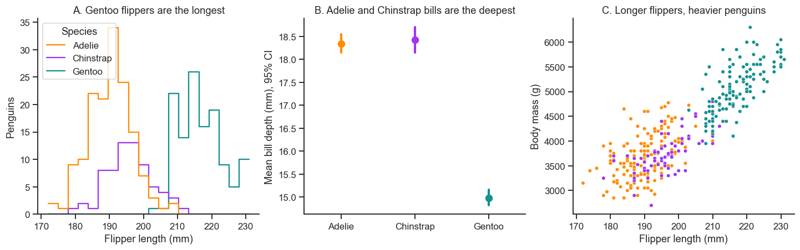
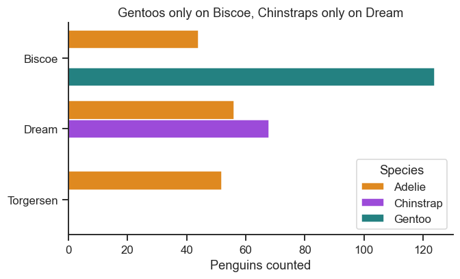
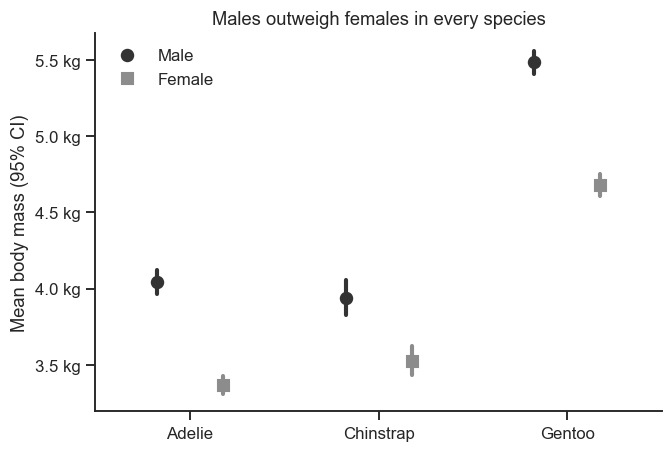

Lesson 7 - Capstone: the Penguin Field Report
The station chief at Palmer wants a one-page figure for the season's briefing. It should answer four questions: Who lives where? How big are they? Do males and females differ? Can you tell species apart by their bills? You'll use everything from Lessons 1-6.
By the end of this lesson you can:
- plan a multi-panel figure from the questions it must answer
- build it panel by panel with
plt.subplotsand axes-level functions - give a whole figure one legend, one title and a consistent color story
- review your own chart against a design checklist
- save the figure in the format its destination needs, from a notebook that runs top to bottom
- describe a figure in alt text and a caption
import pandas as pd
import matplotlib.pyplot as plt
import seaborn as sns
sns.set_theme(style="ticks")
penguins = sns.load_dataset("penguins")
PENGUIN_COLORS = {"Adelie": "#FF8C00", "Chinstrap": "#A034F0", "Gentoo": "#159090"}
SEX_COLORS = {"Female": "#8c8c8c", "Male": "#333333"}
Step 1: questions first, charts second
| Question | Data job | Chart (lesson) |
|---|---|---|
| Who lives where? | counts by two categories | countplot (3) |
| How big are they? | distribution per group | step histplot or kdeplot (2) |
| Do males and females differ? | compare a mean across groups (zero not meaningful) | pointplot (3) |
| Can bills tell species apart? | relationship between two numbers, by group | scatterplot (1) |
Picking the chart from the question is the most important step in the whole course. If you can’t name the question a panel answers, cut the panel.
Choosing a form also means ruling others out. Three forms mislead, and you have met each of them:
- Bars for a mean when zero means nothing. Bars start at zero, so three bill depths between 15 and 18 mm become three bars of nearly the same height (Lesson 3). Use points.
- A line between groups that have no order. It draws a trend from one species to the next, and there is none (Lesson 4).
- A pie. People compare angles poorly, and lengths and positions well (Lesson 3).
Now try it with three questions the chief did not ask. Nobody names the chart this time.
Show a solution
fig, axes = plt.subplots(1, 3, figsize=(13, 4), layout="constrained")
# A. How one measurement is spread: a distribution, one outline per species
sns.histplot(data=penguins, x="flipper_length_mm", hue="species", palette=PENGUIN_COLORS,
element="step", fill=False, binwidth=3, ax=axes[0])
axes[0].set(xlabel="Flipper length (mm)", ylabel="Penguins",
title="A. Gentoo flippers are the longest")
axes[0].get_legend().set_title("Species")
# B. A mean compared across groups, where zero means nothing: points, not bars,
# and no line from one species to the next
sns.pointplot(data=penguins, x="species", y="bill_depth_mm", hue="species",
palette=PENGUIN_COLORS, linestyle="none", legend=False, ax=axes[1])
axes[1].set(xlabel="", ylabel="Mean bill depth (mm), 95% CI",
title="B. Adelie and Chinstrap bills are the deepest")
# C. Two measurements of the same penguin: a relationship, one point per bird
sns.scatterplot(data=penguins, x="flipper_length_mm", y="body_mass_g", hue="species",
palette=PENGUIN_COLORS, s=18, legend=False, ax=axes[2])
axes[2].set(xlabel="Flipper length (mm)", ylabel="Body mass (g)",
title="C. Longer flippers, heavier penguins")
sns.despine(fig=fig)

Step 2: lay out the canvas
fig, axes = plt.subplots(2, 2, figsize=(11, 8), layout="constrained")
for ax, letter in zip(axes.flat, "ABCD"):
ax.set_title(f"Panel {letter}", loc="left")

axes is a 2×2 NumPy array. Index it as axes[row, col], or flatten it with axes.flat.
Step 3: fill the panels
The full report is below. Read it panel by panel. Every line is something you’ve already met.
fig, axes = plt.subplots(2, 2, figsize=(11, 8), layout="constrained")
species_order = ["Adelie", "Chinstrap", "Gentoo"]
# A. Who lives where?
ax = axes[0, 0]
sns.countplot(data=penguins, y="island", hue="species", palette=PENGUIN_COLORS,
hue_order=species_order, order=["Biscoe", "Dream", "Torgersen"], # busiest first
legend=False, ax=ax)
ax.set(xlabel="Penguins counted", ylabel="",
title="A. Gentoos only on Biscoe, Chinstraps only on Dream")
# B. How big are they?
ax = axes[0, 1]
sns.histplot(data=penguins, x="body_mass_g", hue="species", palette=PENGUIN_COLORS,
hue_order=species_order, element="step", fill=False, linewidth=1.8,
binwidth=200, legend=False, ax=ax)
ax.xaxis.set_major_formatter(lambda v, pos: f"{v / 1000:.1f} kg")
ax.set(xlabel="Body mass", ylabel="Penguins",
title="B. Gentoos are more than 1.3 kg heavier on average")
# C. Do males and females differ?
ax = axes[1, 0]
sns.pointplot(data=penguins, x="species", y="body_mass_g", hue="sex",
order=species_order, palette=SEX_COLORS,
dodge=0.35, linestyle="none", markers=["o", "s"], ax=ax)
ax.yaxis.set_major_formatter(lambda v, pos: f"{v / 1000:.1f} kg")
ax.set(xlabel="", ylabel="Mean body mass (95% CI)",
title="C. Males outweigh females in every species")
ax.legend(title="", frameon=False, loc="upper left")
# D. Can bills tell species apart?
ax = axes[1, 1]
sns.scatterplot(data=penguins, x="bill_length_mm", y="bill_depth_mm", hue="species",
palette=PENGUIN_COLORS, hue_order=species_order, s=18, alpha=0.8,
legend=False, ax=ax)
ax.set(xlabel="Bill length (mm)", ylabel="Bill depth (mm)",
title="D. Bill shape alone nearly separates the species")
# One legend for the species colors, one title for the figure
handles = [plt.Line2D([], [], marker="o", linestyle="", color=PENGUIN_COLORS[s], label=s)
for s in species_order]
fig.legend(handles=handles, loc="outside lower center", ncols=3, frameon=False)
fig.suptitle("Palmer Station penguins: three species, three body plans",
fontsize=15, fontweight="bold")
sns.despine(fig=fig)

The design choices to notice:
- One color story. Species are the same three colors in every panel, so a single figure-level legend (
fig.legend) covers A, B and D. Panel C usesSEX_COLORS, two grays, so the two encodings can’t be confused. - Panel titles state findings and carry letters, so the chief can say “look at panel C.”
hue_ordereverywhere keeps the species in the same order in every panel.loc="outside lower center"works withlayout="constrained"and places the legend below the panels, never on the data.
Step 4: review before you share
Pre-flight checklist
- Question: Can I name the question each panel answers, and is the answer visible in five seconds?
- Form: Is the chart type right for the data’s job (Lesson 3’s bars vs. points, Lesson 4’s lines only for ordered x)?
- Honesty: Do bars start at zero? Are facet scales shared? Are error bars explained?
- Color: Is color used only where it means something, consistently, and colorblind-safe?
- Ink: Is there anything I can delete, such as a redundant legend, a heavy border, or a gridline nobody needs?
- Words: Plain-English labels with units, on axes and legends alike, and titles that state findings.
Step 5: describe and deliver
A figure is finished when someone else can use it without you. That takes three things: a file, a notebook that makes the file again, and a few words that say what the figure shows.
Save it for where it is going.
| Where the figure goes | Save it as | Why |
|---|---|---|
| A slide or a document | PNG, at dpi=200 or more |
Pixels, and enough of them to stay sharp at the size it is shown |
| A printed report, a poster, anything that will be resized | SVG or PDF | A vector file stays sharp at any size |
Here is panel A of the report as a chart of its own, saved both ways:
fig, ax = plt.subplots(figsize=(6, 3.6), layout="constrained")
sns.countplot(data=penguins, y="island", hue="species", palette=PENGUIN_COLORS,
hue_order=["Adelie", "Chinstrap", "Gentoo"],
order=["Biscoe", "Dream", "Torgersen"], ax=ax)
ax.set(xlabel="Penguins counted", ylabel="",
title="Gentoos only on Biscoe, Chinstraps only on Dream")
ax.get_legend().set_title("Species")
sns.despine()
fig.savefig("penguin-islands.png", dpi=200) # for a slide or a document
fig.savefig("penguin-islands.svg") # vector: sharp at any size
from PIL import Image # open the file that was just written
with Image.open("penguin-islands.png") as saved:
print(saved.size, "pixels at", round(saved.info["dpi"][0]), "dots per inch")
(1200, 720) pixels at 200 dots per inch

savefig takes the format from the file name. The figure was made with layout="constrained", so nothing is cut off. For a figure made without it, add bbox_inches="tight" (Lesson 6). The last three lines open the PNG and print what is in it: 1,200 by 720 pixels is 6 by 3.6 inches at 200 dots per inch.
Open the file and look at it. A notebook shows the figure at screen size. The file is what the reader gets, so look at it at the size it will be shown. Can you read the smallest label?
Run the notebook from the top. A notebook remembers every cell you ran, in the order you ran it, and that includes cells you have since changed or deleted. Before you hand it over, restart it and run every cell in order: Kernel > Restart & Run All in Jupyter, Runtime > Restart session and run all in Colab. If the figure still appears, someone else can make it too. This page runs each cell on its own, so do this one in the notebook.
Say what it shows. Alt text is read aloud by a screen reader in place of the figure. A caption sits under the figure for everyone. Both state the finding, not the chart type. Two alt texts for the chart above:
| Alt text | |
|---|---|
| Names the chart | “A bar chart of penguin counts by island and species.” |
| Describes it | “Horizontal bars of penguins counted on three islands. Biscoe has the most, 124 Gentoos and 44 Adelies; Dream has 68 Chinstraps and 56 Adelies; Torgersen has 52 Adelies and no other species.” |
The first is true and useless: a reader who cannot see the chart learns nothing from it. The second gives the finding and the numbers behind it, in two sentences.
A caption is one sentence for a reader who can see the chart, and it carries any caveat that changes how the chart should be read: “Gentoos were counted only on Biscoe and Chinstraps only on Dream; these are the 344 birds that were measured, not every bird on the islands.”
Show a solution
fig, ax = plt.subplots(figsize=(6, 4), layout="constrained")
sns.pointplot(data=penguins, x="species", y="body_mass_g", hue="sex", palette=SEX_COLORS,
dodge=0.35, linestyle="none", markers=["o", "s"], ax=ax)
ax.yaxis.set_major_formatter(lambda v, pos: f"{v / 1000:.1f} kg")
ax.set(xlabel="", ylabel="Mean body mass (95% CI)",
title="Males outweigh females in every species")
ax.legend(title="", frameon=False, loc="upper left")
sns.despine()
fig.savefig("penguin-sexes.png", dpi=200)
alt_text = ("Mean body mass of female and male penguins in three species. Males are heavier "
"in every species: by about 0.7 kg in Adelies, 0.4 kg in Chinstraps and 0.8 kg "
"in Gentoos.")
caption = ("Male penguins outweigh females in all three species; the 11 birds whose sex was "
"not recorded are left out.")
print(alt_text)
print(caption)
Mean body mass of female and male penguins in three species. Males are heavier in every species: by about 0.7 kg in Adelies, 0.4 kg in Chinstraps and 0.8 kg in Gentoos. Male penguins outweigh females in all three species; the 11 birds whose sex was not recorded are left out.

Your turn: the sex-differences report
Show a solution
fig, axes = plt.subplots(1, 3, figsize=(13, 4), layout="constrained")
measures = {"body_mass_g": "Body mass (g)",
"flipper_length_mm": "Flipper length (mm)",
"bill_length_mm": "Bill length (mm)"}
for ax, (column, label) in zip(axes, measures.items()):
sns.pointplot(data=penguins, x="species", y=column, hue="sex", palette=SEX_COLORS,
dodge=0.35, linestyle="none", markers=["o", "s"], ax=ax)
ax.set(xlabel="", ylabel=label, title=label.split(" (")[0])
ax.get_legend().remove() # one figure-level legend instead of three
handles, labels = axes[0].get_legend_handles_labels()
fig.legend(handles, labels, loc="outside upper right", frameon=False)
fig.suptitle("Males are larger on every measure, in every species", fontweight="bold")
sns.despine(fig=fig)

Final quiz
Q1. In a multi-panel figure where every panel colors by species, where should the species legend go?
fig.legend(...) or direct labels do the job once.Q2. What does layout="constrained" do in plt.subplots?
Q3. “How is body mass distributed within each species?” Which chart answers this best?
Q4. According to the pre-flight checklist, what should you confirm first before sharing a chart?
Where to next?
- seaborn’s objects interface (
seaborn.objects as so): a newer, composable API that’s worth exploring once these functions feel natural. - Interactive charts: Plotly or Altair, when readers need to hover, zoom or filter.
- Read more: Stephen Few, Show Me the Numbers. Claus Wilke, Fundamentals of Data Visualization (free online). The seaborn tutorial and gallery.
- Practice: make your own field report from another seaborn dataset, such as
sns.load_dataset("tips"),"mpg"or"taxis".
Course takeaways
- Start from the question, pick the form, then polish.
- Tidy DataFrame in, column names to channels:
x,y,hue,col,row. - Axes-level functions +
plt.subplotsfor custom layouts. Figure-level functions for quick small multiples. - Honest scales, purposeful color, direct labels, plain words.
- Hand over three things: the file, the notebook that makes it again, and the words that say what it shows.